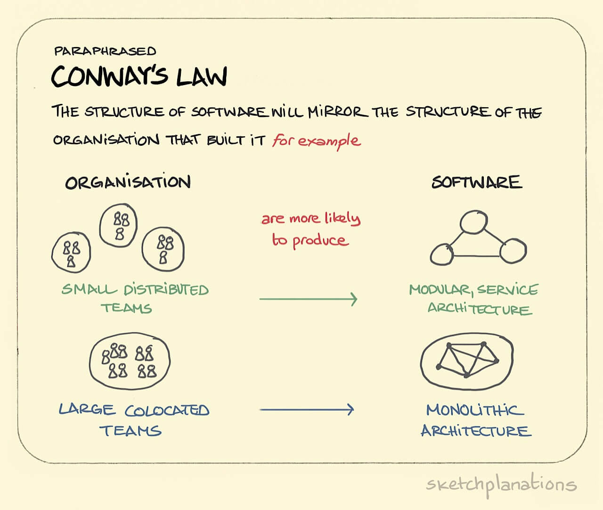

Conway’s Law, Sapir-Whorf, and Semantics
Table of Contents
Note: I haven’t finished writing this file yet.
1. The Sapir-Whorf Hypothesis
i
The effects of Sapir-Whorf are closely related to the Extended Tetris Effect: The Extended Tetris Effect
2. Conway’s Law & The Sapir-Whorf Hypothesis
There’s a very strong effect in politics where Conway’s Law can be analyzed where the people who created content control what other people think, the people who end up using the language that they read from that content in their every day speech and thoughts.

Figure 1: eeeeeeeeeeeeeeeee
Language does for intelligence what the wheel does for the feet and the body. It enables them to move from thing to thing with greater ease and speed and ever less involvement. ― Marshall McLuhan, Understanding Media: The Extensions of Man
Using language to deceive people to do what you want: Confusion of the Roman Calendar and the Fall of Pompey
https://www.youtube.com/watch?v=G0ZZJXw4MTA&t=48
https://en.wikipedia.org/wiki/Project_Xanadu
https://xanadu.com/transclusion/
https://en.wiktionary.org/wiki/transclusion
https://www.youtube.com/watch?v=72M5kcnAL-4&t=180s
i
3. Semantics
3.1. Semantic Domains
i
How some languages embed semantic domains into their noun classes and grammar (e.g. Swahili, Northern Paiute, Jakaltek, etc)
i
4. Corpus Linguistics
Introduction to Corpus Linguistics
The Zipf Probability Distribution Functions
Collocations
5. How Semantics, Associations, And Collocations Affect Our Cognitive Processing
i
As Brittonic Memetics mentions in this post, memes compete for real estate in our brains. Corpus linguistics could be used to analyze the frequency of our speech and indicate which memes are more dominant compared to our memes within our minds.
Wikipedia: The Statistical Significance of Collocations
i
i